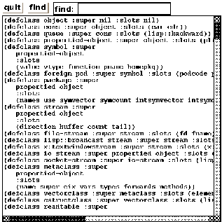

menu-panel [class]
:super panel
:slots (items item-dots item-height
charwidth charheight
height-offset
highlight-item
color-pixels
active-color)
-
- Menu-panel is a kind of panel that can locate only
button-items and/or bitmap-button-items.
Unlike panel, however, menu-panel is normally invisible
and is exposed when the button-item to which the menu-panel is
associated is pressed.
If a menu-panel is made always visible, it becomes a pinned menu.
The response of each button-item to mouse events is slightly different from
button-items in other panels,
as the mouse button has been pressed somewhere outside the button-item.
Creation of a menu-panel should follow the order described below:
- create a menu-panel by (instance menu-panel :create).
- create button-items or/and bitmap-button-items and locate them in the
menu-panel by (send aMenuPanel :create-item button-item "BTN" obj meth).
- create a menu-button-item in another panel and associate the menu-panel
with the menu-button-item by (instance menu-button-item :create
"Option" obj meth :menu-window aMenuPanel).

-
- create a menu-panel window. The size of the window is expanded each time
new menu-item is added.
:create-item class label receiver method &rest mesg [method]
-
-
adds a menu item in this menu-panel window and attatches
the corresponding action.
The receiver objects receives mesg
when the mouse button is released on the item.
menubar-panel [class]
:super panel
:slots
-
- Menubar-panel is a subpanel always located at the top of the parent
panel. A menubar-panel resembles with the Macintosh desktop's menubar
which lets out several pull-down menus.
Panel-items placed in the menubar should be menu-button-items.
A menubar-panel is created by the panel's :create-menubar method.
2016-03-23